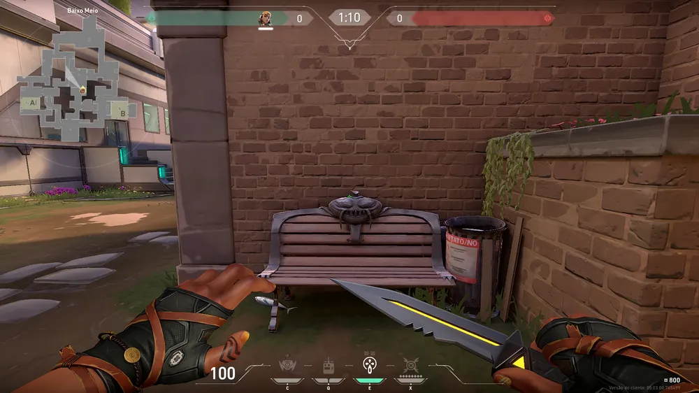
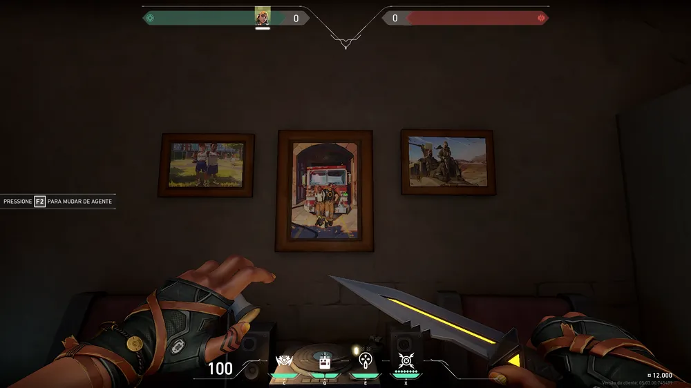

No mapa Ascent, há outra referência ao League. Na região do meio, você pode observar um banco com o rosto do campeão Tahm Kench, o Rei do Rio. Conhecido apenas como "TK" pelos jogadores de LOL, o personagem é utilizado normalmente na rota inferior como suporte, mas também já apareceu na top lane. Tahm Kench é conhecido na história de League of Legends por ser um demônio que realiza desejos. No entanto, em troca, ele pede algo da pessoa que quiser ver os seus sonhos se realizarem. Em relação à sua gameplay, o Rei do Rio chama a atenção dos jogadores por engolir seus aliados, protegendo-os, ou seus adversários, causando dano.
Ainda no The Range, os jogadores podem encontrar o escritório do agente Brimstone. Para acessar a área, você deve seguir novamente para a esquerda do estande de tiro. Ao chegar no prédio laranja, desça a escada e siga o caminho. A sala do personagem se encontra com a porta aberta. No cômodo, os players encontram fotos de diversos momentos da vida do agente. Além disso, você pode interagir com um dispositivo localizado no sofá, uma vitrola e um computador na escrivaninha, que contém detalhes da história do jogo.
